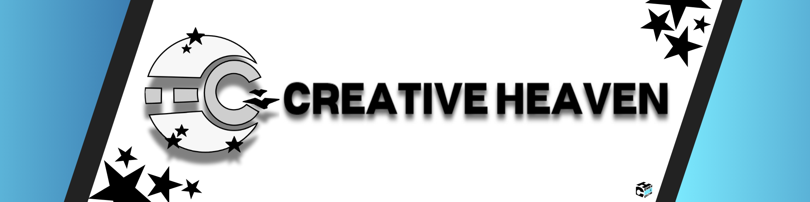

Que es Creative Heaven?
Creative Heaven es un grupo de desarrolladores de videojuegos indie, de temática variada. Originalmente formado en España, en el año 2020. Actualmente formado por 5 integrantes, con 2 juegos en desarrollo.


Creative Heaven es un grupo de desarrolladores de videojuegos indie, de temática variada. Originalmente formado en España, en el año 2020. Actualmente formado por 5 integrantes, con 2 juegos en desarrollo.

Año 1998. El arcade de Willy ha abierto sus puertas, Edward acepta el trabajo como guardia de seguridad con un objetivo: descubrir qué le ocurrió a su hermana, quien desapareció dentro del local unos días antes de que el arcade cerrara. La misión de Edward será sobrevivir mientras desvela la verdad sobre la desaparición de su hermana y los oscuros secretos que esconde Willy's. ¿Estás preparado?

te pagan por bajar a un sótano en el que hay seres que pueden matarte en segundos sólo por buscar unos archivos, ¿bajarías?